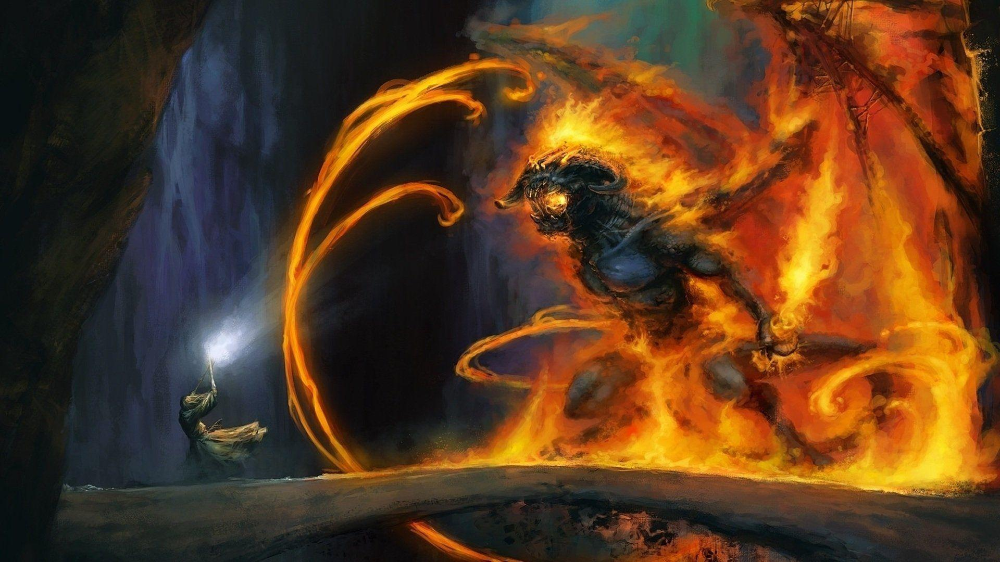

Gandalf and the Wizards of Middle-Earth

"To crooked eyes, truth may wear a wry face."
Gandalf is one of the Istaris (Wizards) who were sent to Middle-Earth to join the cause of fighting Sauron, The Dark Lord, wielder and maker of the One Ring. They were forbidden to match their power with his power, therefore they were sent in the form of Men.
The Five Wizards
There were four other Wizards besides Gandalf:
- The Blue Wizards
The Blue Wizards were apparently the greatest in power, yet it is believed that they failed in their mission, for not a passage, except a few, were written of them.
- Saruman the White
Saruman the White was the Leader of the White Council. He was friends with Rohan, and they gave him Isengard to be his own.
At first, he was a friend of the Rohirrim, but when the Dark Lord had arisen again in his tower, he attacked Rohan and its people, which made him an enemy of Rohan.
The Destruction of Isengard
By then, the wrath of the Ents was awakened by the two Halflings, Peregrin Took and Meriadoc Brandybuck, and they stormed upon Isengard and cast it into ruins.